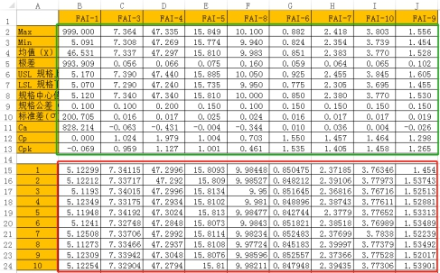
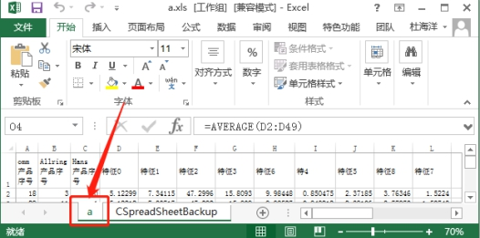

Trong các dự án sản xuất thực tế thường có nhu cầu ghi lại dữ liệu sản xuất, dữ liệu này thường được xuất ra dưới dạng bảng Excel. Khi khách hàng yêu cầu định dạng Excel cố định (vị trí ghi dữ liệu, công thức tính toán, kết quả hiển thị đã được chuẩn hóa), ta có thể dùng file Excel cố định đó làm template, chỉ ghi đè dữ liệu sản xuất vào các ô tương ứng. Công cụ “Ghi dữ liệu vào template Excel” chính là thực hiện chức năng này.
File template như Hình 1, trong đó phần khung đỏ là các ô sẽ ghi dữ liệu sản xuất, còn phần khung xanh là dữ liệu cố định của template hoặc kết quả tự động tính từ công thức. Trong sản xuất chỉ cần ghi đè phần dữ liệu sản xuất (khung đỏ), còn phần khung xanh sẽ tự động cập nhật.

| Phân loại | Tên tham số | Mô tả tham số |
|---|---|---|
| Cửa sổ thuộc tính | Đường dẫn file Excel | Đường dẫn đầy đủ đến file template Excel |
| Tên sheet | Tên tab sheet chứa các ô cần ghi trong file template Excel | |
| Hàng bắt đầu ghi | Số thứ tự hàng bắt đầu ghi dữ liệu sản xuất, ví dụ trong Hình 1 là hàng 15 | |
| Cột bắt đầu ghi | Số thứ tự cột bắt đầu ghi dữ liệu sản xuất, ví dụ trong Hình 1 là cột B | |
| Tên bảng dữ liệu | Tên bảng dữ liệu cần truy vấn (yêu cầu đã kết nối đến cơ sở dữ liệu chứa bảng), giống với công cụ Truy vấn cơ sở dữ liệu | |
| Các mục truy vấn | Tên các cột cần lấy dữ liệu, giống công cụ Truy vấn cơ sở dữ liệu | |
| Điều kiện truy vấn | Biểu thức logic điều kiện truy vấn (có thể dùng and, or hoặc ngoặc). Ví dụ: bán kính>60 AND bán kính<65, hoặc phức tạp hơn: tên_cột1= 'Aa' and tên_cột2= 'Bb' and (tên_cột3 = 888 or tên_cột4 = 888), giống công cụ Truy vấn cơ sở dữ liệu | |
| Cửa sổ hình ảnh | Không có | |
| Chuỗi dữ liệu | Đường dẫn lưu file Excel mới | Vì khi ghi dữ liệu vào template rồi lưu sẽ ghi đè lên file gốc, nên phải lưu thành file mới. Tham số này chính là đường dẫn lưu file mới |
| Giao diện nâng cao | Không có |
| Phân loại | Tên tham số | Mô tả tham số |
|---|---|---|
| Cửa sổ giám sát | Kết quả thực thi | Kết quả thực thi của công cụ. |
| Thời gian thực thi | Thời gian thực thi của công cụ. | |
| Cửa sổ hình ảnh | Không có | |
| Chuỗi dữ liệu | Không có |
Công cụ ghi dữ liệu vào template Excel thực chất là công cụ điền dữ liệu sản xuất vào file Excel template có sẵn (ví dụ: ExcelModel.xls trong thư mục Sample). Sau khi điền dữ liệu sản xuất, các thông số như CPK sẽ tự động được tính toán và hiển thị nhờ công thức có sẵn trong Excel.
Đường dẫn đầy đủ đến file template gốc, chỉ hỗ trợ định dạng .xls, đường dẫn không được chứa ký tự tiếng Trung;
Tên tab sheet trong file .xls template, không hỗ trợ tên tiếng Trung. Như Hình 2;

Đường dẫn lưu file Excel mới sau khi đã ghi dữ liệu vào template. Đây là kiểu chuỗi, có thể dùng công cụ Tạo gói dữ liệu kết hợp công cụ Định dạng chuỗi để tạo ra. Đường dẫn phải bao gồm đầy đủ đường dẫn + tên file và kết thúc bằng .xls, không hỗ trợ tiếng Trung. Ví dụ: “C:\Users\blabla\Desktop\Excelcpk\new.xls”.
Công cụ này cần kết hợp với công cụ Thu thập dữ liệu/Truy vấn cơ sở dữ liệu. Nó sẽ ghi dữ liệu từ các mục truy vấn vào file template Excel, vị trí bắt đầu ghi là hàng và cột đã cài đặt; số hàng và cột ghi vào phụ thuộc vào số dòng kết quả truy vấn và số mục truy vấn;
Công cụ chỉ ghi đè phần dữ liệu sản xuất, giữ nguyên công thức tính toán của template, vì vậy khi mở file Excel, các ô công thức sẽ tự động tính lại;
Công cụ giữ được giá trị cố định và công thức nhưng không giữ được định dạng ô (phông chữ, màu nền, v.v.);
Về cách sử dụng truy vấn bảng dữ liệu, xem hướng dẫn công cụ “Truy vấn cơ sở dữ liệu”;
Số cột tối đa khi ghi không vượt quá IV (256 cột), số hàng tối đa không vượt quá 65536;
参见“\Samples\Excel模板写入.gvp”，引用的excel模板文件见\Samples\ExcelModel.xls。